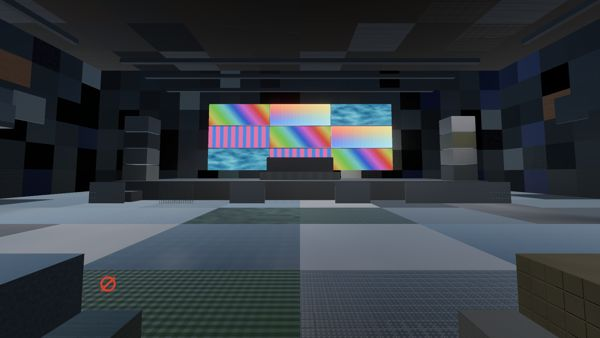
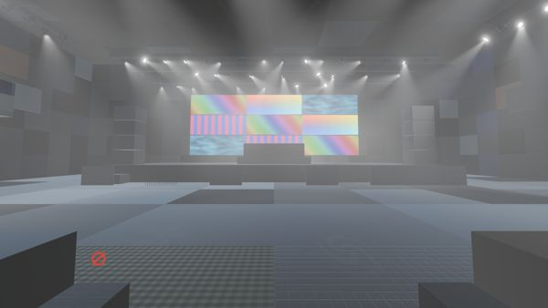
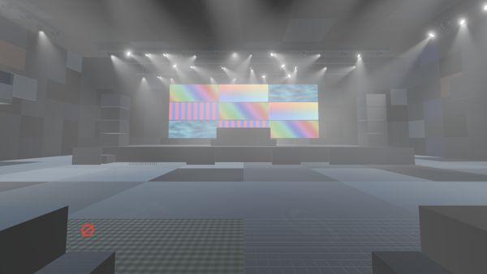
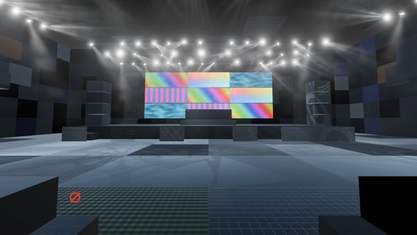
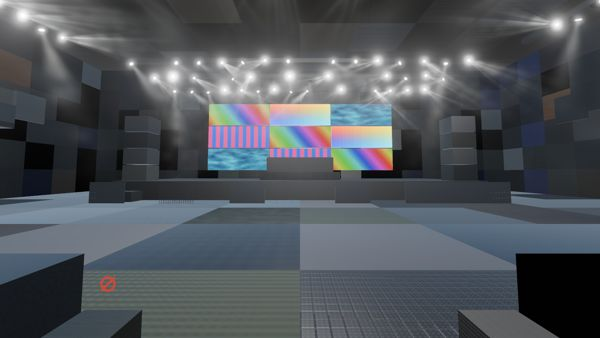
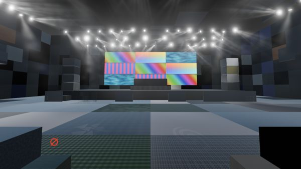

Basis performance test · stage lighting and avatars · October 2026
How many stage lights fit in a VR frame, and what do avatars cost?
Club and festival worlds in Basis need lighting rigs that hold a steady frame rate in a headset. We built a test venue, lit it five different ways at 25, 50 and 100 fixtures, and timed each at VR resolution, with and without a crowd of 250 avatars. Volumetric beams set the limit. The best we tried, an unreleased VRSL-URP change, fits about ten fixtures in the budget, and the beams that ship today fit seven at most. A crowd of 250 Poiyomi Toon avatars costs more than the whole stage-lighting budget, and a test port of VRC Light Volumes support to Poiyomi's URP shader adds another 3.5–5 ms at its default setting.
The budget
At 90 Hz a headset gives the GPU 11.1 ms to draw each frame. When a frame takes longer, the VR runtime shows a reprojected copy of the previous frame in its place, so we treat the budget as a hard limit. We set it for a Quest 3 or Valve Frame running over PC on an RTX 3080, and divided the frame between the world, LTCGI (video screens lighting the room), stage lighting and a reserve. Stage lighting gets 3 ms, split between light landing on surfaces, the visible beams and the fixtures themselves.
The test
Our reference is a club world we're porting to Basis, with a 41-fixture VRSL rig driven by DMX and AudioLink. The budget above is what holding 90 Hz there allows.
The test venue is generated, but built like an authored world. Walls and floors come in 2–4 m panels, and its 93 materials follow the reference club's mix: textured, plain, unlit screens, glass and cutout mesh.
- Rig
- Six trusses at 9 m, filled to 25, 50 or 100 fixtures in the reference club's mix of spot movers, washes and pars, at full white with gobos on the spots.
- Views
- Five fixed cameras. Each approach is judged on its worst view.
- Crowd
- 250 copies of one Poiyomi Toon stand-in avatar, or none.
- Resolution
- 2560 × 1440 at render scale 1.58, the pixel count of a Quest 3 or Valve Frame.
- Fair comparison
- Every system is set as bright as Unity's spot lights on the stage-front floor, within 1%, and each cost is timed against an unlit control in the same run.
- Two PCs
- Timed on an RTX 3090 as ratios to Unity's spot lights, then the spots alone timed on the reference RTX 3080 to turn every ratio into budget milliseconds.
The lighting systems

Unity URP spot lights
One Unity spot light per fixture, shadows off. The brightness reference. No beams.

VRSL-URP as shipped
Our URP port of VRSL. One screen-space pass lights every surface, and beams are drawn by stepping through each cone (ray-marching).

VRSL-URP improved
Two unreleased changes. Each screen tile skips lights whose cone can't reach it, and beams are calculated in four segments instead of stepped.

VRStageLighting
AcChosen's VRStageLighting 2.8.1, the original VRSL. Beams are cone meshes, and projector meshes brighten the surfaces they hit.

VRStageLighting-GI
VRStageLighting's beams, with surfaces lit by a loop over every light inside each material. A stand-in built to cost what the GI package's loop costs.

VRC Light Volumes
REDSIM's light volumes, read by every material, with each gobo as a light cookie. Beams from VRStageLighting.
Five systems, with VRSL-URP in two versions. Front-of-house view at 100 fixtures, brightness matched.
What the rig costs
Double the fixtures and most systems roughly double their cost. Unity's spot lights nearly triple, as each pixel's list of lights fills up. On the stage view at 100 fixtures, beams are the larger part of every system that has them, and the cheapest full system needs 15.7 ms. That's about five times the stage-lighting budget, and more than the whole 11.1 ms frame. A 100-fixture show is over budget with every system tested; we keep it in the test to show how costs grow.
- Light on surfaces
- Beams and fixture bodies
Show the numbers
How many fixtures fit
Each bar is the largest rig an approach can carry inside its share of the 3 ms, on its worst view. Below 25 fixtures we extrapolated two ways, and where they disagree the bar shows a range. A full system can only be as big as its tightest share allows, and in every system with beams that's the beams.
- Surface light, 1.5 ms share
- Beams, 1.0 ms share
- Paler end: the two estimates disagree
Show the numbers
For world builders
Give volumetric beams only to the fixtures that need them. Beams are what limit every rig here, and their cost follows the number of beams. A rig where only some fixtures throw beams should carry more fixtures in total, though we haven't timed one.
For avatar authors
Avatars draw in the same frame as the stage lighting. Our stand-in is a Poiyomi Toon URP avatar with 67,344 triangles, 7 materials, 204 bones and 59.1 MB of texture memory. With no stage lighting, a crowd of 250 costs 5.9–9.4 ms on the views that see it, about 0.02–0.04 ms per avatar. That's more than stage lighting's whole 3 ms budget. The frame budget at the top doesn't have a line for avatars yet, and a crowd this size wouldn't fit beside it. Our avatars stand still with no far LOD, and a real crowd would cost less.
- Under URP, Poiyomi takes light from Unity's spot lights, VRSL-URP and VRStageLighting. Unity's spot lights only reached it with Realistic lighting, pixel lights on and brightness limits off; we didn't test which of those matters.
- VRC Light Volumes doesn't reach Poiyomi avatars in URP yet. Poiyomi 10.0.28 has its Light Volumes code only in the Built-in pipeline passes.
To estimate what URP support would cost, we copied that code into Poiyomi's URP passes in a local test build, not a Poiyomi release, and timed 250 copies against the stock shader under VRC Light Volumes. The lighting tests above used the same port to light the crowd.
| VRC Light Volumes setting | Extra for 250 avatars | Extra per avatar |
|---|---|---|
| Default, up to 4 lights a pixel | 3.5–5.1 ms | 0.014–0.020 ms |
| Uncapped | 6.4–15.9 ms | 0.026–0.064 ms |
At the default setting, most of the extra cost stays even with every light off. It comes from the ported code, not the lighting. Uncapped, the lighting adds more on top.
Limits of the test
- The reference RTX 3080 ran at its 83 °C limit throughout. A cooler card would fit about one to six more fixtures per approach, and 18 more for VRC Light Volumes at its cap.
- Only Unity's spot lights were timed on the RTX 3080; the others are RTX 3090 timings scaled to it. Scaling by the 3080's figure at each rig size instead gives lower counts below 50 fixtures: 11–17 for projector meshes, 23–24 for VRC Light Volumes.
- Timed on a flat screen with a headset's pixel count, from one view, not in stereo. A run in a headset is still to come.
- No system cast shadows from geometry. Unity's spot lights ran with shadows off, and the other systems have none to turn on. A shadowed Unity light renders the scene into a shadow map every frame, and switching that on across a rig would cost far more; we didn't time it.
- VRStageLighting and VRC Light Volumes ran on fixed values, not live DMX.
How we measured
- A Windows release build of Basis from Unity 6000.7.0b6, using URP's Forward+ renderer, Direct3D 11 and MSAA 2. A test driver switches between states, places the camera at the five fixed views, freezes time and holds every fixture at full white, VRSL-URP through a held DMX signal and the others on fixed values.
- GPU time comes from Unity's
FrameTimingManager. Each state is timed in blocks of 150 frames, keeping each block's median, in forward then reverse order to cancel slow drift, over three passes. A warm-up run before each set is thrown away. - A cost is a state's median minus the median of an unlit control in the same run, view by view. Each run also times a null twin, a state that draws exactly the same as another; the gap between them shows the run's noise, 0.01–0.08 ms here.
- Before timing, each system was matched to Unity's spot lights within 1%, by the light it adds to the stage-front floor.
- Each view's RTX 3080 to RTX 3090 factor for Unity's spot lights at 100 fixtures, 1.40–1.50, turns the other systems' RTX 3090 timings into RTX 3080 milliseconds.
- The GPU clock is logged beside every run, because cost moves with it. Four RTX 3090 runs reached its temperature limit and were timed again from a cool card, with clocks within 10% of the reference run's.
- For fixture counts, each view's cost is joined in straight lines through 25, 50 and 100 fixtures, and the count is the largest where the dearest view still fits the share. Below 25 fixtures two extrapolations bound it: a line from zero, and the 25–50 line carried back, which keeps any fixed cost.
- The avatar figures come from runs alternating the stock and ported avatar builds, timing VRC Light Volumes' lights on and off, with and without the crowd. The measure is the crowd's cost with the lights on. The session's first two crowd runs read high for a reason we haven't found and are left out; the rest agree within 0.7 ms.
Conclusion
No system we tested carries a 100-fixture show inside the budget, Unity's own lights included, and we've accepted that gap.
For light on surfaces, Unity's URP spot lights with shadows off are the cheapest option tested, fitting 45 fixtures, though without gobos. Poiyomi avatars pick them up without a shader patch, given the material settings above. Their cost grows faster than the rig, and a gobo as a light cookie makes each one about three times dearer. The alternatives each come with a trade-off.
- VRC Light Volumes puts a gobo on every light for 1–1.8 times the cost of a plain spot at 100 fixtures, and fits 31 fixtures. Lighting avatars needs the shader support above, 3.5–5 ms per 250 Poiyomi avatars at the default setting.
- VRStageLighting's projector meshes fit 24 fixtures, but brighten unlit LED screens, which should stay as the artist made them.
- VRSL-URP's surface pass fits 10–13 even with the unreleased cone cull, and also lights unlit screens. As shipped, its surface pass fits 7–10, and the full system with beams costs two and a half to three times the next dearest.
- The VRStageLighting-GI stand-in fits 12 and has no gobos on surfaces. It only replaces world materials, and its avatar cost is unknown.
No beam technique fits its 1 ms share beyond ten fixtures. VRSL-URP's unreleased four-segment beams reach ten, VRStageLighting's mesh cones seven at most, and VRSL-URP's shipped ray-marching three. The reference club's 41-fixture rig would need beams about four times cheaper than the best here, and Unity's lights have no beams to offer.
On cost, shadowless Unity spot lights are the strongest choice for surfaces, unless surface gobos turn out to be needed. Beams still need a technique we haven't found.
All of this is desktop only for now, Unity's spot lights included. A Quest 3's GPU has a small fraction of an RTX 3080's power, and Quest's renderer lights each object with only a handful of lights. We don't recommend any of these systems for standalone worlds until they're measured there. Next come a cheaper beam technique, a Quest measurement, and the look and feature requirements that decide whether surface gobos are needed.